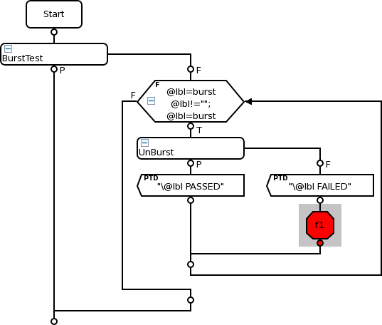

Identifying fail labels in a burst
The burst mode option in the vector setup allows you to execute a sequence of test labels in one go. In a production environment this feature becomes very important (as a one-shot execution can be considerably quicker than individual test execution), especially if you have streams of vectors with lots of labels.
About this task
However, it is also important to pinpoint which of a sequence of tests a device has failed. There are two solutions to locate where devices are failing in a burst mode test.
- Set the testflow flag unburst_mode for testflow execution.
- Use the for...loop testflow control node.
This task describes the second method.
Before you begin
There must be a testflow using the burst mode. For details on setting bursts, see:
For other details on bursting, see:
Procedure
Results
When you run the testflow, the individual labels of the burst is executed separately, which allows you to pinpoint which of a sequence of tests a device has failed.
Example
In this testflow, any failing device from the test suite "Unburst" will end up in bin f1.

Functional changes
- Introduced before SmarTest 6.3.2